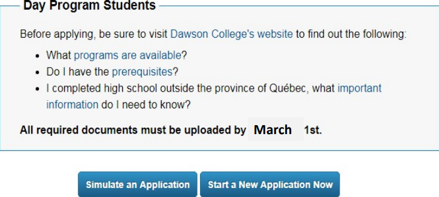

This page is a continuation of "Choosing a CEGEP and Program". If you haven't read that page yet, check it out here: Choosing a CEGEP and Program.
Making smart choices
There are certain strategies and things to keep in mind when you plan for and begin the application process. It's safer to avoid making any assumptions when you're applying to CEGEP—don't be overconfident about where you'll get accepted. Even if you know which CEGEP you want to attend, and even if you're somehow "certain" that you'll get accepted at a college, always apply to multiple CEGEPs!
This guide is primarily for Quebec high school students applying to CEGEP (day division, fall semester). The process may vary slightly for out-of-province (Canadian), international, CEGEP transfer and Continuing Education applicants.
Planning and Timeline
Firstly, know that CEGEP applications are not first-come first-serve, provided you apply before the deadline. Modules open in January, and you must submit your application by March 1—this includes all documents and payment (application fees). While you technically have until the deadline to submit everything, it's crucial that you do not leave anything to the last minute. Not only would doing so make it easy to forget something and miss an application requirement, but it would also create stress as you rush to complete the application(s) correctly (don't forget that you have to balance applications and schoolwork!).
Instead, start planning ahead before you apply. Ideally, you should do some practice runs before you actually apply. Know the program requirements, gather the necessary documentation, and be prepared to pay application fees. If a letter of intent, portfolio, or any requirement of the sort applies to your desired program(s), have them complete and prepared before applying.
Begin applying a good amount of time before the deadline (at least a week earlier) so that you can take your time: follow the instructions carefully, and ask your guidance counsellor or a trusted adult any questions that come up during the process. Then, once you're finalizing your applications, verify that you've done everything correctly, and that you've submitted everything required of you; if everything looks good and you're ready, submit your applications.
Practice Applications
There are a few different application systems, most of which, if not all, give you the option of completing an application simulation. (We'll go over the application systems in more detail on the next page, Application Systems.) If a simulation option is available, it is highly recommended that you do a practice run—familiarize yourself with the module, know what you'll need to apply (documents and more), and reduce the stress experienced during the real applications by going through the actual process risk-free. Just remember to submit a real application afterwards!
Dawson College's Application Centre: Simulate or Start an Application
Photo by Dawson College. Copyright by Dawson College, 2021.
Second-choice programs
Many application modules require you to provide two program options right away (again, more on this in Application Systems). There are some strategies when it comes to choosing the second option, since you don't want to select one that's harder to get into than your first choice. In short, a second-choice program should be easier to get into than your first choice.
When applying (and asked to provide two program choices), AVOID the following combinations:
- Two options/profiles of the same program:
- These generally have similar or even identical prerequisites, so if you don't qualify for admission to your first choice, you likely won't qualify for the 2nd choice program either.
- For example: Health Science (1st choice), Pure and Applied Science (2nd choice), or the other way around
- Example with Arts (ALC) at Dawson College: Graphic Design (1st choice), Illustration (2nd choice)
- Example with Arts (ALC) at Vanier College: Languages and Cultures (1st choice), Communications, Media and Studio Arts (2nd choice)
- Second-choice program with higher requirements/cutoffs:
- Make sure to select a second-choice program with less or lower requirements (prerequisites) than your first choice! Otherwise, if you don't qualify for your first choice program, you'll be even less qualified for the second. See the examples:
- General Social Science (1st choice), Commerce (2nd choice—requires Math 506, which the 1st choice does not)
- Example specific to Dawson College: Arts and Culture (1st choice), Visual Arts (2nd choice—requires a portfolio, which the 1st choice does not)
- Liberal Arts (1st choice), Arts and Sciences (2nd choice—requires Math 506, Physics 504, Chemistry 504 and potentially a letter of intent, none of which are prerequisites for the 1st choice)
- A pre-university program and a technical program:
- This one goes both ways: don't have a pre-university program as your second option with a technical program as your first option, and don't have a technical program as your second option with a pre-university program as your first option.
- Remember that technical programs accept a rather small number of students a year, which makes them quite competitive.
So, we repeat: do NOT choose the above combinations when applying to CEGEP! Always keep in mind that a second-choice program should be easier to get into than your first choice.
Summary and Takeaways
Here's a summary of the first three pages of the Applying to CEGEP section (Applying to CEGEP, Choosing a CEGEP and Program, Making smart choices): the "Must Knows" of CEGEP admissions and applications in general.
Please note that these are general guidelines and that following them does not guarantee any outcomes, including but not limited to successful completion of an application, successful submission of an application, admission to a college, etc.
Program Checklist
Some questions to ask yourself when choosing a CEGEP and program, ideally a good amount of time before you start applying.
Is this CEGEP a good fit:
- Does it offer your desired program?
- Does it have a strong support system? (Student services and support)
- What fees do you need to pay?
- How is its reputation?
- Is its location convenient, or do you like where it's located?
- What facilities does it have? What clubs and activities does it offer?
Is this program a good fit:
- Does the discipline interest and/or intrigue you?
- Do you wish to study this field after CEGEP, or to find a career in this field?
- Do I have/meet all of the program requirements?
See Choosing a CEGEP and Program for more details.
A program's prerequisites and cutoffs (requirements) are determining factors in CEGEP admissions. Here are some important things to check and look out for when choosing a program/applying to CEGEP.
If you:
- don't have a prerequisite,
- aren't currently taking the prerequisite high school course,
- won't earn the prerequisite credits before the end of your secondary V school year,
it may be best to avoid applying to this particular college program.
A similar guideline applies to cutoffs. If your grades:
- don't meet the cutoffs,
- are just barely below or above the cutoffs,
you may want to avoid applying to this particular college program.
Another similar suggestion pertaining to cutoffs is the following: if your marks are borderline, don't take the risk of applying to this particular college program on more than 3 applications.
TODO
Here's a list of what to do and some recommendations when applying to CEGEP.
- Check program requirements!
- Apply to multiple CEGEPs!
- Respect deadlines!
- Remember that CEGEP applications are not first-come first-serve, as long as you apply before the deadline
- Plan and strategize:
- Make a plan for each CEGEP you'll be applying to: figure out what program option/options you'll select
- Have the required documents prepared before you apply
- Start your applications early and give yourself a week or more before the deadline (you may wish to start earlier)
- Double-check that you've done everything correctly
- Simulate applications:
- Do practice runs if an application system provides the option
- Note that you must then submit a real application, even after completing a simulated application!
- Choose a second-choice program that is easier to get into than your first-choice program. Compare your first and
potential second choices, ensuring that the second-choice program meets these criteria:
- Less requirements
- Lower cutoffs
- If your first choice is a pre-university program, make sure that your second choice is also a pre-university program
- If your first choice is a technical program, make sure that your second choice is also a technical program
Sources: Loyola High School — 2020 CEGEP Applications, documents from various high schools, notes from previous CEGEP information sessions
Want to see some important dates, including deadlines and open houses? Continue to Important Dates.
Ready to learn about each CEGEP's application system/how to actually apply? Go to Application Systems.